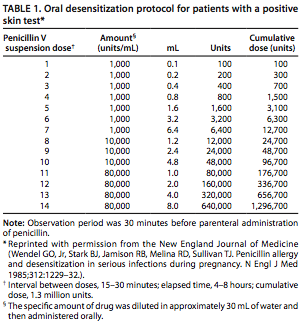

Clinicians should attempt to obtain objective evidence of urethral inflammation. However, if clinic-based diagnostic tools (e.g., Gram-stain microscopy) are not available, patients should be treated with drug regimens effective against both gonorrhea and chlamydia.
Urethritis can be documented on the basis of any of the following signs or laboratory tests:
• Mucopurulent or purulent discharge on examination.
• Gram stain of urethral secretions demonstrating ≥5 WBC per oil immersion field. The Gram stain is the preferred rapid diagnostic test for evaluating urethritis and is highly sensitive and specific for documenting both urethritis and the presence or absence of gonococcal infection. Gonococcal infection is established by documenting the presence of WBC containing GNID.
• Positive leukocyte esterase test on first-void urine or microscopic examination of first-void urine sediment demonstrating ≥10 WBC per high-power field.
If none of these criteria are present, testing for N. gonorrhoeae and C. trachomatis using NAATs might identify additional infections (248). If the results demonstrate infection with either of these pathogens, the appropriate treatment should be given and sex partners referred for evaluation and treatment. If none of these criteria are present, empiric treatment of symptomatic males is recommended only for men at high risk for infection who are unlikely to return for a follow-up evaluation. Such patients should be treated with drug regimens effective against gonorrhea and chlamydia. Partners of patients treated empirically should be evaluated and treated, if indicated.
